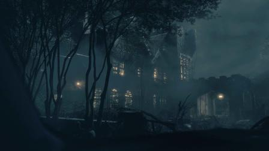
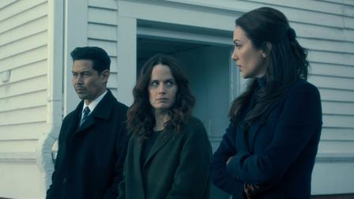
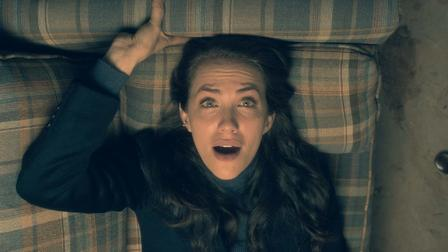
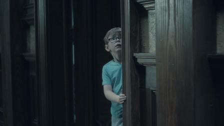
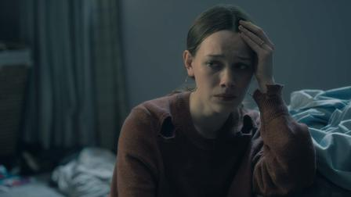
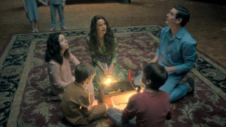
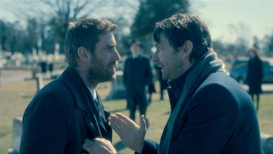
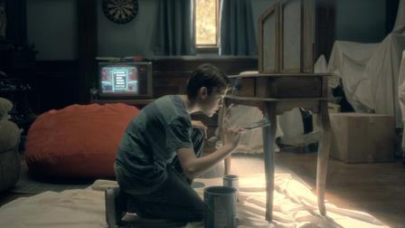
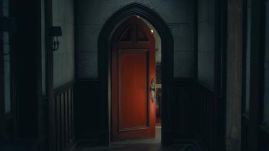
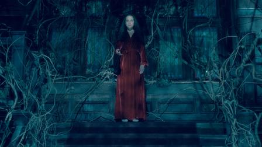

The Haunting of Hill House
2018 | 16+ | 1 season | TV series based on booksUsing flashbacks, a broken family faces the disturbing memories of their old home and the terrifying events that caused them to leave.
Starring:
Michiel Huisman, Carla Gugino, Timothy Hutton
Created by:Mike Flanagan
The Haunting continues in 2020
This spooky choral series is an update of the classic gothic horror novel by Shirley Jackson.Episodes
Season 1

1. Steven ve un fantasma
Steven, que está investigando una historia de fantasmas para su próxima novela, recibe una llamada de su hermana que desencadena una serie de desafortunados eventos.

2. Ataúd abierto
Una terrible tragedia familiar trae recuerdos de otras pérdidas traumáticas. Shirley recuerda su primer encuentro con la muerte, despertándose así sus miedos más ocultos.

3. Tacto
Theo, extremadamente sensible, se ve reflejada en una joven paciente con problemas que se siente amenazada por un espeluznante señor Sonrisas.

4. Cosas de gemelos
Un trastornado Luke, aún luchando contra la adicción y sus miedos interiores, intenta ayudar a una amiga cuando siente que su hermana gemela está en peligro.

5. La señora del cuello torcido
Un tenebroso espectro de silueta indefinida ha perseguido a Nell desde que era una niña. Ahora la señora del cuello torcido ha vuelto y quiere que Nell vuelva a casa.

6. Dos tormentas
La familia se reúne y no precisamente para celebrar. Hugh acude al funeral en una noche tormentosa y se encuentra con sus hijos a los que hace tiempo que no ve.

7. Elegía
Cuando los Crain se reúnen para el último adiós, un flashback revela la conexión del señor Dudley con la casa, desvelándose un secreto tras una pared.

8. Marcas testigo
En la noche de Halloween, un espectro del pasado vuelve a visitar a Shirley y a Theo. Tras la desaparición de Luke, Hugh y Steve temen por su vida y salen a buscarlo.

9. Malos sueños
Olivia intenta discernir entre sueño y realidad. La Sra. Dudley la anima a seguir su instinto maternal y a proteger a sus hijos.
